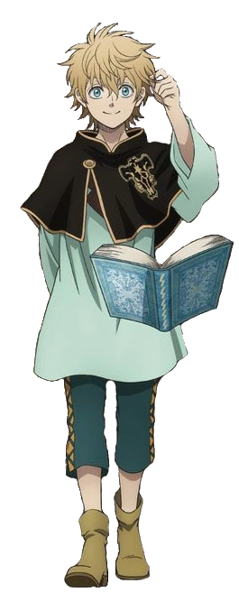

Yami Sukehiro - El Maestro Serio y Relajado:

Yami es el capitán de los Toros Negros y un mago que utiliza la magia oscura. A pesar de su apariencia seria, es sorprendentemente relajado y poco convencional. A menudo muestra una actitud despreocupada y tiene una debilidad por la comida rápida. Aunque es un luchador poderoso y un líder comprometido, su manera única de pensar a veces desconcierta a sus subordinados.
Asta - El Determinado Sin Magia:

Asta es un joven huérfano en un mundo donde la magia es común. A pesar de nacer sin la capacidad de usar magia, compensa su falta de habilidades mágicas con una determinación férrea y un corazón valiente. Utiliza espadas anti-magia para luchar contra los enemigos y, a pesar de no poder conjurar hechizos, su voluntad inquebrantable lo convierte en una fuerza a tener en cuenta.
Noelle Silva - La Noble de Corazón Noble:

Noelle proviene de la noble familia Silva y lucha con la presión de vivir a la altura de las expectativas. Sin embargo, a pesar de su falta de control sobre su magia de agua y sus inseguridades, demuestra ser una aliada leal y valiente. A lo largo de la serie, desarrolla su habilidad mágica y su confianza en sí misma, convirtiéndose en una valiosa miembro de los Toros Negros.
Finral Roulacase - El Teleportador Hábil con Inseguridades:

Finral es un mago especializado en magia de espacio, lo que le permite teletransportarse y crear portales. Aunque es hábil en esta forma de magia, a menudo se siente inseguro y tiende a huir de situaciones desafiantes. A medida que avanza la serie, trabaja en superar sus miedos y en demostrar su valía como miembro de los Toros Negros.
Luck Voltia - El Enérgico Fanático de la Batalla:
Luck es un mago que utiliza magia de rayos y es conocido por su personalidad enérgica y su amor por la lucha. Tiene una inclinación por las emociones extremas y está dispuesto a enfrentar cualquier desafío con una sonrisa en su rostro. A pesar de su apariencia un tanto descuidada, es un luchador formidable y un compañero leal.
Charmy Pappitson - La Maga Hambrienta y Poderosa:

Charmy es una maga especializada en magia de algodón y también es una apasionada cocinera. A menudo se la ve comiendo grandes cantidades de comida y mostrando una personalidad alegre y despreocupada. A pesar de su actitud relajada, es una maga talentosa que puede convertir su magia de algodón en una fuerza formidable en el campo de batalla.
Magna Swing - El Amante del Fuego con Espíritu Competitivo:

Magna es un mago que utiliza magia de fuego y tiene una personalidad competitiva y extrovertida. Siempre está listo para una buena pelea y no tiene miedo de mostrar su entusiasmo. Aunque puede ser un poco impulsivo, su dedicación a la lucha y su vínculo con sus compañeros de equipo lo convierten en un miembro valioso de los Toros Negros.
Vanessa Enoteca - La Bruja del Hilo y la Libertad:

Vanessa es una maga que utiliza magia de hilo y está asociada con la Bruja de las Serpientes. A menudo se la ve vistiendo de manera extravagante y disfrutando de la bebida. Su personalidad relajada y despreocupada la lleva a vivir la vida a su propio ritmo. A pesar de su apariencia y comportamiento rebeldes, es una maga talentosa que puede usar su magia de hilo para manipular y atacar a los enemigos. A lo largo de la serie, Vanessa se une a los Toros Negros y demuestra su valía como miembro valiente y leal del equipo.